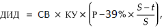

Приложение №1
Инвестиционная декларация
к договору страхования по программе «{{policy.product}}»
№ {{policy.number}} от {{policy.issueDate}} г. (далее – Декларация)

Страховщик: ООО СК «Росгосстрах Жизнь».
Лицензии Банка России: {{insurer.license}}, ИНН {{insurer.INN}}, КПП {{insurer.KPP}}
Юридический адрес: {{insurer.address}}
Реквизиты банка: {{bankInfo}}
Телефон круглосуточного Контакт-центра: 8 800 100 12 10 (бесплатный номер
для
звонков по России).
Для оплаты считайте данный штрих код
в мобильном приложении интернет-банка
ДОГОВОР СТРАХОВАНИЯ № {{policy.number}} от {{policy.issueDate}} г.
по программе «{{policy.product}}»
на основании {{policy.rule}}
(далее по тексту – Правила).
| Фамилия Имя Отчество: | {{holder.fullName}} | Пол: | {{holder.gender}} | |||
| Дата рождения: | {{holder.dateOfBirth}} | Место рождения: | {{holder.birthPlace}} | |||
| Телефон: | {{holder.phoneNumber}} | Гражданство: | {{holder.citizenship}} | |||
| E-mail: | {{holder.email}} | |||||
| Документ, удостоверяющий личность: | {{holder.document.typeAndSN}} | Дата выдачи: | {{holder.document.dateOfIssue}} | |||
| Кем выдан: | {{holder.document.issuedBy}} | |||||
| Адрес постоянной регистрации: | {{holder.registrationAddress}} | |||||
| Почтовый адрес: | {{holder.postAddress}} | |||||
| Фамилия Имя Отчество: | {{insured.fullName}} | Пол: | {{insured.gender}} | |||
| Дата рождения: | {{insured.dateOfBirth}} | Место рождения: | {{insured.birthPlace}} | |||
| Телефон: | {{insured.phoneNumber}} | Гражданство: | {{insured.citizenship}} | |||
| E-mail: | {{insured.email}} | |||||
| Документ, удостоверяющий личность: | {{insured.document.typeAndSN}} | Дата выдачи: | {{insured.document.dateOfIssue}} | |||
| Кем выдан: | {{insured.document.issuedBy}} | |||||
| Адрес постоянной регистрации: | {{insured.registrationAddress}} | |||||
| Почтовый адрес: | {{insured.postAddress}} | |||||
| Выгодоприобретатель {{this.index}}. Доля {{this.percentage}}% | ||||||
| Фамилия Имя Отчество, Дата рождения: | {{this.beneficiar.fullName}}, {{this.beneficiar.dateOfBirth}} | Пол: | {{this.beneficiar.gender}} | |||
| Дата рождения: | {{this.beneficiar.dateOfBirth}} | Место рождения: | {{this.beneficiar.placeOfBirth}} | |||
| Телефон: | {{this.beneficiar.phoneNumber}} | E-mail: | {{this.beneficiar.email}} | Гражданство: | {{this.beneficiar.citizenship}} | |
| Документ, удостоверяющий личность: | {{this.beneficiar.document.typeAndSN}} | Дата выдачи: | {{this.beneficiar.document.dateOfIssue}} | |||
| Кем выдан: | {{this.beneficiar.document.document.issuedBy}} | |||||
| Адрес постоянной регистрации: | {{this.beneficiar.registrationAddress}} | |||||
| Почтовый адрес: | {{this.beneficiar.postAddress}} | |||||
В случае если общая доля менее 100%, Выгодоприобретателями на случай смерти Застрахованного по оставшейся доле являются наследники Застрахованного по закону.
{{/if}} {{else}}Наследники по закону
{{/if}}| Страховые риски | Страховая сумма, {{currency}} | Размер ежегодного страхового взноса, {{currency}} | Страховая выплата | Срок страхования по риску | |
| с | по | ||||
| {{this.insuranceRisks}} | {{this.sumInsured}} | {{this.insurancePremium}} | {{this.insurancePayment}} | {{this.startDate}} | {{this.endDate}} |
При определении страховой суммы в договоре страхования в иностранной валюте страховая выплата производится в рублях по курсу Банка России на дату выплаты. Банковские расходы, связанные с осуществлением страховой выплаты, оплачиваются получателем платежа.
| Страховая премия уплачивается в виде страховых взносов в течение срока действия договора страхования. | |
| Периодичность уплаты страховой премии | {{frequency.premium}} |
| Размер страхового взноса с учетом периодичности*: | {{risk.premium.sum}} {{currency}} |
| Размер первого {{frequency.threePayments}} страхового взноса и порядок его уплаты: | {{risk.premium.sum}} {{currency}}
1-й платеж (страховой взнос) в размере {{threePayments.0.insurancePremium}} {{currency}} уплачивается {{threePayments.0.dateOfPayment}}, 2-й платеж (страховой взнос) в размере {{threePayments.1.insurancePremium}} {{currency}} уплачивается {{threePayments.1.dateOfPayment}}, 3-й платеж (страховой взнос) в размере {{threePayments.2.insurancePremium}} {{currency}} уплачивается {{threePayments.2.dateOfPayment}}. |
| Размеры страховых взносов и даты их оплаты указаны в Графике уплаты страховых взносов (приложение к Информации о договоре добровольного страхования, в том числе о его условиях и рисках, связанных с его исполнением по программе). | |
*Размер периодического страхового взноса в течение срока действия договора страхования может быть
изменен, что указано в Графике уплаты страховых взносов.
В случае если первый страховой взнос не был оплачен (или был оплачен не полностью) в указанный срок,
{{#if insuranceTerms.paymentPeriodLastDate}} либо в случае оплаты первого страхового взноса позднее {{insuranceTerms.paymentPeriodLastDate}}, {{/if}}
Страховщик вправе считать договор страхования не вступившим в силу и произвести возврат поступивших
средств Страхователю.
Датой оплаты страхового взноса считается дата списания всей суммы страхового взноса со счета
Страхователя (или иного уполномоченного им лица) в счет оплаты договора страхования в случае безналичных
расчетов либо дата платежного документа в случае наличных расчетов в соответствии с законодательством
Российской Федерации.
При определении страховой премии в договоре страхования в иностранной валюте сумма, подлежащая уплате в
рублях, определяется по курсу Банка России соответствующей валюты на дату оплаты. Банковские расходы,
связанные с оплатой страховой премии, несет Страхователь.
| Срок действия договора страхования: | {{insuranceTerms.text}} | Договор страхования вступает в силу с {{insuranceTerms.startDate}} при условии уплаты {{#if notLump}} первого страхового взноса {{else}} страховой премии {{/if}} в полном объеме и действует до {{insuranceTerms.endDate}} включительно. |
При расторжении договора страхования до уплаты Страхователем 3-го (третьего) страхового взноса по договору страхования выкупная сумма определяется в размере уплаченных Страхователем страховых взносов. После уплаты Страхователем 3-го (третьего) страхового взноса выкупная сумма определяется в пределах сформированного в установленном порядке страхового резерва на день прекращения договора страхования.
| Период действия договора страхования | Выкупная сумма, {{currency}} | |
| начало | окончание | |
| {{this.periodStartDate}} | {{this.periodEndDate}} | {{this.surrenderValue}} |
При определении выкупной суммы в договоре страхования в иностранной валюте выплата выкупной суммы
переводится в рублях по курсу Банка России на дату выплаты. Банковские расходы, связанные с
осуществлением выплаты выкупной суммы, оплачиваются получателем платежа.
В случае наличия задолженности по уплате страховых взносов по договору страхования на дату досрочного
прекращения договора страхования, сумма задолженности вычитается из выкупной суммы.
| Настоящим я, {{insured.fullName}}, | подтверждаю, что: | не подтверждаю, что: |
{{this}}
| Настоящим Страхователь и Застрахованный | подтверждают, что: | не подтверждают, что: |
{{this}}
Приложение №1
Инвестиционная декларация
к договору страхования по программе «{{policy.product}}»
№ {{policy.number}} от {{policy.issueDate}} г. (далее – Декларация)
Общие положения
В настоящей Декларации используются следующие определения и термины:
Актив Инвестиционной части - инвестиционный инструмент, динамика (изменение цены) и денежные поступления от которого определяют величину дополнительного инвестиционного дохода (далее - ДИД). Описание Актива Инвестиционной части и его основные характеристики указываются в п. 2.2 Декларации.
Эмитент - организация, выпустившая инвестиционный инструмент, приобретенный за счет средств Инвестиционной части, денежные поступления от которого определяют размер ДИД
Коэффициент участия - параметр, выраженный в процентах, показывающий долю от динамики Актива Инвестиционной части, которая участвует в расчете ДИД.
Период инвестирования - период, в течение которого средства Инвестиционной части были фактически инвестированы и за который выплачивается ДИД или его часть.
Структура продукта
1.1. Страховщик за счет средств страховой премии формирует Гарантийный фонд и Инвестиционную часть с целью исполнения обязательств по договору страхования.
1.2. Гарантийный фонд - набор инвестиционных инструментов, приобретенных за счет части страховой премии и обеспечивающих выполнение обязательств Страховщика по выплате гарантированных страховых и выкупных сумм. Средства Гарантийного фонда размещаются в консервативные инструменты, такие как облигации федерального займа Российской Федерации (ОФЗ), облигации субъектов Российской Федерации, облигации, обязательства по которым гарантированы Российской Федерацией, а также другие инструменты.
1.3. Инвестиционная часть - набор инвестиционных инструментов, приобретенных за счет части страховой премии и обеспечивающих зависимость стоимости Инвестиционной части (денежных поступлений от инструментов Инвестиционной части) от стоимости Актива Инвестиционной части в течение периода между датой начала расчета ДИД и датой окончания расчета ДИД. Стоимость инструментов Инвестиционной части (денежные поступления от инструментов Инвестиционной части) определяют размер ДИД.
Параметры Инвестиционной части
2.1. Актив Инвестиционной части: {{dataBasicInvestment.investmentStrategyDescriptionFull}}.
2.2. Описание Актива Инвестиционной части: {{dataBasicInvestment.baseActiveDescription}}.
2.3. Период расчета ДИД: дата начала расчета ДИД - {{purchaseDate}}, дата окончания расчета ДИД - {{dischargeDate}}.
2.4. Ожидаемое значение Коэффициента участия (далее - КУ): {{dataBasicInvestment.participationCoeff}}
2.5. Эмитент: Эмитент будет определен по итогам конкурса на покупку инструмента Инвестиционной части
Порядок расчета дополнительного инвестиционного дохода (ДИД)
3.1. Размер ДИД рассчитывается следующим образом:
3.1.1. при наступлении страхового случая по риску «Смерть Застрахованного по любой причине» (далее – «Смерть»):

{{/if}} {{#if is41_5}}
3.1.2. при наступлении страхового случая по риску «Дожитие Застрахованного до окончания срока страхования» (далее – «Дожитие»):

Где СВ – размер годового страхового взноса; КУ – Коэффициент участия; P – котировка на продажу инструментов Инвестиционной части (в процентах от номинальной стоимости инструмента), публикуемая Эмитентом на закрытие торгового дня на дату принятия решения о страховой выплате при наступлении страхового случая по риску «Смерть»; S – срок действия договора страхования в днях; t – количество дней, прошедших от даты вступления договора страхования в силу до даты принятия решения о страховой выплате при наступлении страхового случая по риску «Смерть»; x0 – значение (цена) Актива Инвестиционной части на закрытие торгового дня на дату покупки; xt – значение (цена) Актива Инвестиционной части на закрытие торгового дня на дату погашения.
3.2. В случае отрицательного значения ДИД он приравнивается к нулю.
3.3. Для целей расчета ДИД используются котировки (значения Актива Инвестиционной части), публикуемые Московской биржей. В случае отсутствия котировки (значения Актива Инвестиционной части) на дату окончания расчета ДИД, опубликованной в выше указанных источниках, а также выходного или праздничного дня в юрисдикции Эмитента используется значение на предыдущий день.
Порядок выплаты ДИД
4.1. В случае досрочного прекращения договора страхования по причинам иным, чем наступление страхового случая, ДИД не рассчитывается и соответственно не подлежит выплате в составе выкупной суммы.
4.2. При наступлении страхового случая по риску «Дожитие» выплате подлежит ДИД, рассчитанный на дату окончания срока страхования.
4.3. При наступлении страхового случая по риску «Смерть» выплате подлежит ДИД, рассчитанный на дату принятия решения о страховой выплате.
4.4. Выплата ДИД осуществляется в течение 3 месяцев после даты окончания фактического периода инвестирования.
Основные риски
5.1. Инвестирование связано с принятием рисков. Цель настоящего раздела – предоставить Страхователю информацию о рисках, связанную с инвестированием, а также предупредить о возможных потерях, которые могут негативно повлиять на стоимость инструментов Инвестиционной части, размер ДИД и возможность его выплаты. Страхователь понимает, что наличие ДИД обусловлено исключительно динамикой инструментов Инвестиционной части. Возможность получения Страхователем ДИД зависит от фактической возможности реализации Страховщтиком инструментов Инвестиционной части в соответствии с условиями, указанными в настоящей Декларации. В случае невозможности получения Страховщиком средств от реализации инструментов Инвестиционной части по независящим от Страховщика причинам, в том числе в случае реализации рисков, указанных в настоящем разделе (и в зависимости от их характера), Страховщик вправе полностью или в течение определенного периода времени не распределять, не начислять и не выплачивать ДИД.
5.2. Рыночный риск: риск потерь в результате возникновения неблагоприятных событий экономического характера, выражающихся, например, в негативной динамике Актива Инвестиционной части или одного или нескольких его компонентов, валютного курса и др.
5.3. Кредитный риск: риск потерь в результате полного или частичного неисполнения обязательств Эмитентом, инвестиционным брокером, через которого осуществляются операции, а также прочими участниками, задействованными в операциях по перечислению денежных средств.
5.4. Риск изменения кредитного качества Эмитента, риск замены Эмитента и Актива Инвестиционной части, выпускаемого Эмитентом. Кредитное качество Эмитента может как улучшаться, так и ухудшаться в течение срока действия договора.
5.5. Риск вторичного рынка. Котировки на продажу инвестиционных инструментов Инвестиционной части, на основании которых производится расчет ДИД при досрочном прекращении договора страхования или при наступлении страхового случая по риску «Смерть», определяется и публикуются Эмитентом. Страховщик не может оказывать влияние на котировки. В силу указанных выше факторов Страхователь несет риск снижения стоимости инструментов Инвестиционной части (и, как следствие, ДИД), а также риск самого факта наличия котировки на продажу инструментов Инвестиционной части от Эмитента.
5.6. Калькуляционный риск. Расчет всех параметров осуществляется калькуляционным агентом, который руководствуется принципами добросовестности и справедливости. В случае Индекса или Фонда в качестве Актива Инвестиционной части или одного из его компонентов: калькуляционный агент вправе временно приостановить расчета Индекса/Фонда, изменить его состав и/или методику его расчета, также существует риск полного прекращения существования Индекса/Фонда. В случае Корзины акций или отдельной акции в качестве Актива Инвестиционной части: калькуляционной агент вправе изменить компоненты Корзины и/или скорректировать их цены/скорректировать цену акции с целью отражения справедливого экономического эффекта от некоторых событий, таких как (но не ограничиваясь ими): делистинг акции с биржи, слияние, поглощение или реорганизация компании, консолидация или дробление акций, а также другие корпоративные действия, имеющие размывающее или консолидирующее действие на стоимость акции.
5.7. Риск досрочного погашения инструментов Инвестиционной части. Эмитент на свое разумное усмотрение имеет право досрочно погасить инструменты Инвестиционной части вследствие ряда событий, таких как: прекращение расчета или замена Актива Инвестиционной части, прекращение торговли компонентами Актива Инвестиционной части, значительные изменения условий Актива Инвестиционной части и условий его использования, а также других событий. Сумма, выплачиваемая по инструментам Инвестиционной части в результате досрочного погашения, может быть меньше, чем сумма, которая была бы выплачена в случае отсутствия досрочного погашения.
5.8. Правовой риск. Риск потерь, связанных с появлением новых или изменением (отменой) существующих нормативно-правовых актов в Российской Федерации, а также любых других юрисдикциях, в которых ведут деятельность контрагенты, вовлеченные в процесс выпуска и совершения сделок с инструментами Инвестиционной части, а также инструментами, входящими (напрямую или через фонды) в состав Актива Инвестиционной части.
5.9. Риск, связанный с международными ограничениями (например, введение санкций), ограничивающими права получения инвестиционного дохода по инструментам Инвестиционной части Страховщиком, а также связанный с введением иных ограничений, делающих невозможным размещение средств Инвестиционной части и получение ДИД в соответствии с Декларацией.
5.10. Прочие риски (не отраженные в Декларации вследствие разнообразия ситуаций, возникающих при инвестировании), которые могут повлиять на стоимость Инвестиционной части и, как следствие, на величину ДИД, и на саму возможность выплатить ДИД.
5.11. В случае Индекса в качестве Актива Инвестиционной части или одного из его компонентов: Индекс обеспечивает участие в корзине компонентов, указанных в описании Индекса в п. 2.2 Декларации, что означает зависимость динамики Индекса от динамики компонентов корзины Индекса. Тем не менее, динамика Индекса и компонентов корзины Индекса могут материально отличаться как в сторону превышения доходности Индекса над доходностью корзины компонентов Индекса, так и наоборот. Участие в Индексе не эквивалентно участию в корзине компонентов Индекса в силу возможного наличия таких механизмов расчёта Индекса, как регулярное приведение весов компонентов Индекса к установленной доле, наличие механизма контроля волатильности (в результате чего участие Индекса в корзине компонентов Индекса в каждый момент времени может быть как меньше, так и больше 100%), снижение доходности Индекса на величину синтетических дивидендов.
5.12. Страховщик не выступает с инвестиционными рекомендациями и не гарантирует выплату ДИД.
5.13. Страхователь понимает и принимает указанные риски.
Информация
о договоре добровольного страхования, в том числе о его
условиях и рисках, связанных с его исполнением
по программе «{{policy.product}}» № {{policy.number}} от {{policy.issueDate}} г.
Используйте информацию, содержащуюся в данной таблице,
при принятии решения о том, подходит ли Вам предлагаемая
услуга с учетом уровня Вашего среднемесячного дохода
| Разница между страховой суммой по риску «Дожитие Застрахованного до окончания срока страхования» (далее – Дожитие) и совокупной страховой премией по договору добровольного страхования |
Разница между страховой суммой по риску «Смерть Застрахованного по любой причине» (далее – Смерть) и совокупной страховой премией по договору добровольного страхования |
| {{difference.printDiffSurvavial1}}1 {{difference.printDiffSurvavial2}} | {{difference.printDiffDeath1}}1 {{difference.printDiffDeath2}} |
| № п/п | ОПИСАНИЕ СОДЕРЖАНИЯ ПРЕДОСТАВЛЯЕМОЙ ИНФОРМАЦИИ | ||||||||||
| 1 |
Информация о Страховщике
|
Полное наименование: Общество с ограниченной ответственностью Страховая
компания «Росгосстрах
Жизнь» (далее – Страховая компания или Страховщик). Лицензии Банка России {{insurer.license}}.
Кредитный рейтинг: {{insurer.rating}}
|
|||||||||
| 2 |
Информация о доходности по договорам добровольного страхования с участием Страхователя в
инвестиционном доходе Страховщика, по которым обязательства по уплате страховой суммы по риску
Дожитие за 3 (три) предшествующих календарных года прекращены исполнением
|
{{#if newProduct}}Расчет доходности невозможен в силу отсутствия договоров с участием
Страхователя в инвестиционном доходе Страховщика, по которым обязательства по уплате страховой
суммы по риску Дожитие за 3 (три) календарных года, предшествующих заключению настоящего
договора, прекращены исполнением и которые содержат условия, аналогичные заключаемому
договору.{{else}}{{historyIncome}}% годовых.{{/if}} |
|||||||||
| 3 |
Предупреждение о риске:
|
|
|||||||||
| 4 |
Информация о праве получателя страховых услуг отказаться от договора добровольного страхования,
порядке определения размера страховой выплаты, порядке и сроке осуществления страховой выплаты
по каждому страховому риску, обязанности Страховщика удержать налог при расчете страховой
выплаты
|
|
|||||||||
| 5 | Информация о размере денежных средств (в процентах на день предоставления информации),
направляемых на обеспечение исполнения обязательств Страховщика по договору добровольного
страхования по выплате страховой суммы и инвестиционного дохода |
{{commission.allOutcome}}% от страховой премии (суммы страховых взносов за весь период действия
договора страхования) в размере {{commission.allPremium}} рублей1.
|
|||||||||
| 6 | Информация о размерах агентского вознаграждения, комиссионного вознаграждения, а также платежей,
связанных с заключением и исполнением договора добровольного страхования (в процентах) |
{{commission.allIncome}}%.
|
|||||||||
|
Примечание к пунктам 5 и 6:
Сумма денежных средств за весь срок действия договора добровольного страхования, подлежащих
передаче получателем страховых услуг, направляется на обеспечение исполнения обязательств
Страховщика по выплате выгодоприобретателю страховой суммы и инвестиционного дохода, на выплату
агентского вознаграждения, комиссионного вознаграждения, а также на платежи, связанные с
заключением и исполнением договора добровольного страхования, и составляет 100% (сто процентов).
|
|||||||||||
| 7 |
Информация о способе определения дохода по договору добровольного страхования жизни, а также,
если применимо, перечне показателей, от значения (изменения значений) которых зависит размер
дохода по договору добровольного страхования
|
1.1. Страховщик за счет средств страховой премии формирует Гарантийный фонд и Инвестиционную
часть с
целью исполнения обязательств по договору страхования.
1.2. Гарантийный фонд - набор инвестиционных инструментов, приобретенных за счет части страховой
премии и обеспечивающих выполнение обязательств Страховщика по выплате гарантированных страховых
и
выкупных сумм. Средства Гарантийного фонда размещаются в консервативные инструменты, такие как
облигации федерального займа Российской Федерации (ОФЗ), облигации субъектов Российской
Федерации,
облигации, обязательства по которым гарантированы Российской Федерацией, а также другие
инструменты.
1.3. Инвестиционная часть - набор инвестиционных инструментов, приобретенных за счет части
страховой
премии и обеспечивающих зависимость стоимости Инвестиционной части (денежных поступлений от
инструментов Инвестиционной части) от стоимости Актива Инвестиционной части в течение периода
между
датой начала расчета ДИД и датой окончания расчета ДИД. Стоимость инструментов Инвестиционной
части
(денежные поступления от инструментов Инвестиционной части) определяют размер ДИД.
2.1. Актив Инвестиционной части: {{dataBasicInvestment.investmentStrategyDescriptionFull}}.
2.2. Описание Актива Инвестиционной части: {{dataBasicInvestment.baseActiveDescription}}.
2.3. Период расчета ДИД: дата начала расчета ДИД - {{purchaseDate}}, дата окончания расчета ДИД -
{{dischargeDate}}.
2.4. Ожидаемое значение Коэффициента участия (далее - КУ):
{{dataBasicInvestment.participationCoeff}}
2.5. Эмитент: Эмитент будет определен по итогам конкурса на покупку инструмента Инвестиционной
части
3.1. Размер ДИД рассчитывается следующим образом:
3.1.1. при наступлении страхового случая по риску «Смерть Застрахованного по любой причине»
(далее – «Смерть»):
{{#if is39}}
{{/if}}
{{#if is41_5}}
3.1.2. при наступлении страхового случая по риску «Дожитие Застрахованного до окончания срока
страхования» (далее – «Дожитие»):
Где СВ – размер годового страхового взноса; КУ – Коэффициент участия; P – котировка на продажу
инструментов Инвестиционной части (в процентах от номинальной стоимости инструмента),
публикуемая
Эмитентом на закрытие торгового дня на дату принятия решения о страховой выплате при наступлении
страхового случая по риску «Смерть»; S – срок действия договора страхования в днях; t –
количество дней,
прошедших от даты вступления договора страхования в силу до даты принятия решения о страховой
выплате
при наступлении страхового случая по риску «Смерть»; x0 – значение
(цена) Актива Инвестиционной части на закрытие торгового дня на дату покупки; xt –
значение (цена) Актива Инвестиционной части на закрытие торгового дня на дату погашения.
3.2. В случае отрицательного значения ДИД он приравнивается к нулю.
3.3. Для целей расчета ДИД используются котировки (значения Актива Инвестиционной части),
публикуемые Московской биржей. В случае отсутствия котировки (значения Актива Инвестиционной
части) на
дату окончания расчета ДИД, опубликованной в выше указанных источниках, а также выходного или
праздничного дня в юрисдикции Эмитента используется значение на предыдущий день.
Дополнительный инвестиционный доход не выплачивается:
1) в случае, если он не начислен по договору страхования на момент осуществления страховой
выплаты по рискам Дожитие и Смерть,
2) в случае досрочного прекращения договора страхования по причинам иным, чем наступление
страхового случая.
|
|||||||||
1По курсу Банка России на дату заключения договора страхования, в случае если договор страхования заключен в валюте отличной от рублей
2Указание Банка России от 20.11.2015 № 3854-У «О минимальных (стандартных) требованиях к условиям и порядку осуществления отдельных видов добровольного страхования».
Информация
о договоре добровольного страхования, в том числе о его
условиях и рисках, связанных с его исполнением
по программе «{{policy.product}}» № {{policy.number}} от {{policy.issueDate}} г.
Используйте информацию, содержащуюся в данной таблице,
при принятии решения о том, подходит ли Вам предлагаемая
услуга с учетом уровня Вашего среднемесячного дохода
| Разница между страховой суммой по риску «Дожитие Застрахованного до окончания срока страхования» (далее – Дожитие) и совокупной страховой премией по договору добровольного страхования |
Разница между страховой суммой по риску «Смерть Застрахованного по любой причине» (далее – Смерть) и совокупной страховой премией по договору добровольного страхования |
| {{difference.printDiffSurvavial1}}1 {{difference.printDiffSurvavial2}} | {{difference.printDiffDeath1}}1 {{difference.printDiffDeath2}} |
| № п/п | ОПИСАНИЕ СОДЕРЖАНИЯ ПРЕДОСТАВЛЯЕМОЙ ИНФОРМАЦИИ | ||||||||||
| 1 | Информация о Страховщике |
Полное наименование: Общество с ограниченной ответственностью Страховая
компания «Росгосстрах
Жизнь» (далее – Страховая компания или Страховщик). Лицензии Банка России {{insurer.license}}.
Кредитный рейтинг: {{insurer.rating}} |
|||||||||
| 2 | Информация о доходности по договорам добровольного страхования с участием Страхователя в инвестиционном доходе Страховщика, по которым обязательства по уплате страховой суммы по риску Дожитие за 3 (три) предшествующих календарных года прекращены исполнением | {{#if newProduct}}Расчет доходности невозможен в силу отсутствия договоров с участием Страхователя в инвестиционном доходе Страховщика, по которым обязательства по уплате страховой суммы по риску Дожитие за 3 (три) календарных года, предшествующих заключению настоящего договора, прекращены исполнением и которые содержат условия, аналогичные заключаемому договору.{{else}}{{historyIncome}}% годовых.{{/if}} | |||||||||
| 3 | Предупреждение о риске: |
|
|||||||||
| 4 | Информация о праве получателя страховых услуг отказаться от договора добровольного страхования, порядке определения размера страховой выплаты, порядке и сроке осуществления страховой выплаты по каждому страховому риску, обязанности Страховщика удержать налог при расчете страховой выплаты |
|
|||||||||
| 5 | Информация о размере денежных средств (в процентах на день предоставления информации), направляемых на обеспечение исполнения обязательств Страховщика по договору добровольного страхования по выплате страховой суммы и инвестиционного дохода | {{commission.allOutcome}}% от страховой премии (суммы страховых взносов за весь период действия договора страхования) в размере {{commission.allPremium}} рублей1. | |||||||||
| 6 | Информация о размерах агентского вознаграждения, комиссионного вознаграждения, а также платежей, связанных с заключением и исполнением договора добровольного страхования (в процентах) | {{commission.allIncome}}%. | |||||||||
|
Примечание к пунктам 5 и 6:
Сумма денежных средств за весь срок действия договора добровольного страхования, подлежащих передаче получателем страховых услуг, направляется на обеспечение исполнения обязательств Страховщика по выплате выгодоприобретателю страховой суммы и инвестиционного дохода, на выплату агентского вознаграждения, комиссионного вознаграждения, а также на платежи, связанные с заключением и исполнением договора добровольного страхования, и составляет 100% (сто процентов). |
|||||||||||
| 7 | Информация о способе определения дохода по договору добровольного страхования жизни, а также, если применимо, перечне показателей, от значения (изменения значений) которых зависит размер дохода по договору добровольного страхования |
Структура продукта 1.1. Страховщик за счет средств страховой премии формирует Гарантийный фонд и Инвестиционную часть с целью исполнения обязательств по договору страхования. 1.2. Гарантийный фонд - набор инвестиционных инструментов, приобретенных за счет части страховой премии и обеспечивающих выполнение обязательств Страховщика по выплате гарантированных страховых и выкупных сумм. Средства Гарантийного фонда размещаются в консервативные инструменты, такие как облигации федерального займа Российской Федерации (ОФЗ), облигации субъектов Российской Федерации, облигации, обязательства по которым гарантированы Российской Федерацией, а также другие инструменты. 1.3. Инвестиционная часть - набор инвестиционных инструментов, приобретенных за счет части страховой премии и обеспечивающих зависимость стоимости Инвестиционной части (денежных поступлений от инструментов Инвестиционной части) от стоимости Актива Инвестиционной части в течение периода между датой начала расчета ДИД и датой окончания расчета ДИД. Стоимость инструментов Инвестиционной части (денежные поступления от инструментов Инвестиционной части) определяют размер ДИД. Параметры Инвестиционной части 2.1. Актив Инвестиционной части: {{dataBasicInvestment.investmentStrategyDescriptionFull}}. 2.2. Описание Актива Инвестиционной части: {{dataBasicInvestment.baseActiveDescription}}. 2.3. Период расчета ДИД: дата начала расчета ДИД - {{purchaseDate}}, дата окончания расчета ДИД - {{dischargeDate}}. 2.4. Ожидаемое значение Коэффициента участия (далее - КУ): {{dataBasicInvestment.participationCoeff}} 2.5. Эмитент: Эмитент будет определен по итогам конкурса на покупку инструмента Инвестиционной части Порядок расчета дополнительного инвестиционного дохода (ДИД) 3.1. Размер ДИД рассчитывается следующим образом: 3.1.1. при наступлении страхового случая по риску «Смерть Застрахованного по любой причине» (далее – «Смерть»):
{{#if is39}}
{{/if}}
{{#if is41_5}}
3.1.2. при наступлении страхового случая по риску «Дожитие Застрахованного до окончания срока страхования» (далее – «Дожитие»):
Где СВ – размер годового страхового взноса; КУ – Коэффициент участия; P – котировка на продажу инструментов Инвестиционной части (в процентах от номинальной стоимости инструмента), публикуемая Эмитентом на закрытие торгового дня на дату принятия решения о страховой выплате при наступлении страхового случая по риску «Смерть»; S – срок действия договора страхования в днях; t – количество дней, прошедших от даты вступления договора страхования в силу до даты принятия решения о страховой выплате при наступлении страхового случая по риску «Смерть»; x0 – значение (цена) Актива Инвестиционной части на закрытие торгового дня на дату покупки; xt – значение (цена) Актива Инвестиционной части на закрытие торгового дня на дату погашения. 3.2. В случае отрицательного значения ДИД он приравнивается к нулю. 3.3. Для целей расчета ДИД используются котировки (значения Актива Инвестиционной части), публикуемые Московской биржей. В случае отсутствия котировки (значения Актива Инвестиционной части) на дату окончания расчета ДИД, опубликованной в выше указанных источниках, а также выходного или праздничного дня в юрисдикции Эмитента используется значение на предыдущий день.
|
|||||||||
1По курсу Банка России на дату заключения договора страхования, в случае если договор страхования заключен в валюте отличной от рублей
2Указание Банка России от 20.11.2015 № 3854-У «О минимальных (стандартных) требованиях к условиям и порядку осуществления отдельных видов добровольного страхования».
Приложение к Информации о договоре добровольного страхования, в том числе о его условиях и рисках,
связанных
с его исполнением
по программе «{{policy.product}}» № {{policy.number}} от {{policy.issueDate}} г.
Таблица выкупных сумм
При расторжении договора до уплаты Страхователем 3-го (третьего) страхового взноса по
договору страхования выкупная сумма определяется в размере уплаченных Страхователем страховых взносов. После
уплаты Страхователем 3-го (третьего) страхового взноса выкупная сумма определяется в пределах
сформированного в установленном порядке страхового резерва на день прекращения договора страхования.
В случае наличия у Страхователя задолженности по уплате страховых взносов перед Страховщиком, сумма
задолженности вычитается из выкупной суммы.
| Период действия договора страхования | Выкупная сумма, {{currency}} | |
| начало | окончание | |
| {{this.periodStartDate}} | {{this.periodEndDate}} | {{this.surrenderValue}} |
Приложение к Информации о договоре добровольного страхования, в том числе о его условиях и рисках,
связанных
с его исполнением
по программе «{{policy.product}}» № {{policy.number}} от {{policy.issueDate}} г.
Таблица выкупных сумм
При расторжении договора до уплаты Страхователем 3-го (третьего) страхового взноса по
договору страхования выкупная сумма определяется в размере уплаченных Страхователем страховых взносов. После
уплаты Страхователем 3-го (третьего) страхового взноса выкупная сумма определяется в пределах
сформированного в установленном порядке страхового резерва на день прекращения договора страхования.
В случае наличия у Страхователя задолженности по уплате страховых взносов перед Страховщиком, сумма
задолженности вычитается из выкупной суммы.
| Период действия договора страхования | Выкупная сумма, {{currency}} | |
| начало | окончание | |
| {{this.periodStartDate}} | {{this.periodEndDate}} | {{this.surrenderValue}} |
Приложение к Информации о договоре добровольного страхования, в том числе о его условиях и рисках,
связанных
с его исполнением
по программе «{{policy.product}}» № {{policy.number}} от {{policy.issueDate}} г.
| Дата оплаты | Размер платежа (страхового взноса), {{currency}} |
| {{this.dateOfPayment}} | {{this.insurancePremium}} |
Приложение к Информации о договоре добровольного страхования, в том числе о его условиях и рисках,
связанных
с его исполнением
по программе «{{policy.product}}» № {{policy.number}} от {{policy.issueDate}} г.
| Дата оплаты | Размер платежа (страхового взноса), {{currency}} |
| {{this.dateOfPayment}} | {{this.insurancePremium}} |
Уведомление
Я, {{holder.fullName}}, настоящим подтверждаю, что ознакомл{{#if holderGenderMale}}ен{{else}}ена{{/if}} со всеми условиями договора добровольного накопительного страхования жизни СК «Росгосстрах жизнь» (далее – Договор). Я понимаю все условия по оформляемому Договору, а именно:
ФИО ____________________________________________
(заполняется клиентом собственноручно)
Паспорт серия ________ № _______________
(заполняется клиентом собственноручно)
_____________ / __________________________________________________ /
(подпись) (Ф.И.О. полностью, заполняется клиентом собственноручно)
«____» ________________ 20___ г.
(заполняется клиентом собственноручно)
Согласие на обработку персональных данных Страхователя
| 1.ПЕРСОНАЛЬНЫЕ ДАННЫЕ КЛИЕНТА | ||||||||||||||||||||||||
| Фамилия Имя Отчество | {{holder.fullName}} | |||||||||||||||||||||||
| Пол |
{{#if holder.isGenderMale}}Мужской Женский {{else}}Мужской Женский{{/if}} |
Гражданство |
{{#if holder.isCitizenshipRusssia}}РФ Иное {{else}}РФ Иное{{/if}} |
Дата рождения | {{holder.dateOfBirth}} | Место рождения | {{holder.birthPlace}} | |||||||||||||||||
| Документ, удостоверяющий личность |
{{#if holder.isRusssiaPassport}}паспорт гражданина РФ заграничный паспорт гражданина РФ свидетельство о рождении Иное{{/if}} {{#if holder.isForeignTravelPassport}}паспорт гражданина РФ заграничный паспорт гражданина РФ свидетельство о рождении Иное{{/if}} {{#if holder.isBirthCertificate}}паспорт гражданина РФ заграничный паспорт гражданина РФ свидетельство о рождении Иное{{/if}} {{#if holder.isOtherDocument}}паспорт гражданина РФ заграничный паспорт гражданина РФ свидетельство о рождении Иное{{/if}} |
|||||||||||||||||||||||
| Серия | {{holder.docSeries}} | Номер | {{holder.docNumber}} | |||||||||||||||||||||
| код подразделения (при наличии): |
{{holder.issuerCode}} | дата выдачи | {{holder.issueDate}} | |||||||||||||||||||||
| орган, выдавший документ: | {{holder.issuerName}} | |||||||||||||||||||||||
| Сведения о ранее выданном паспорте гражданина РФ (заполняется при наличии) |
Серия | Номер | ||||||||||||||||||||||
| Адрес по месту постоянной регистрации (страна, индекс, регион, район, город/населенный пункт, улица, дом, корпус, квартира) |
Дата регистрации |
|||||||||||||||||||||||
| {{holder.regFullAddress}} | ||||||||||||||||||||||||
| Адрес по месту фактического проживания (страна, индекс, регион, район, город/населенный пункт, улица, дом, корпус, квартира) |
{{#if holder.isSameAsRegistration}}{{else}}{{/if}} совпадает с адресом регистрации по месту жительства | |||||||||||||||||||||||
| {{holder.factFullAddress}} | ||||||||||||||||||||||||
| Домашний телефон по адресу регистрации |
Телефон по месту фактического проживания |
Мобильный телефон |
{{holder.phoneNumber}} | |||||||||||||||||||||
| {{holder.email}} | ИНН (при наличии) |
{{holder.INN}} | СНИЛС (при наличии) |
{{holder.SNILS}} | ||||||||||||||||||||
|
2.СОГЛАСИЕ КЛИЕНТА, ПРЕДОСТАВЛЕННОЕ ПАО Банк «ФК Открытие»/ ПАО «Росгосстрах
Банк», НА ВЗАИМОДЕЙСТВИЕ С БЮРО КРЕДИТНЫХ ИСТОРИЙ |
||||||||||||||||||||||||
| Я выражаю согласие не выражаю согласие |
на получение ПАО Банк «ФК Открытие», ПАО «Росгосстрах Банк» (далее совместно –
Пользователи
кредитной
истории, а по отдельности – Пользователь кредитной истории) информации обо мне из любых
бюро
кредитных
историй (одного или нескольких), содержащейся в основной части моей кредитной истории в
объеме,
порядке
и сроки, которые предусмотрены Федеральным законом от 30.12.2004 №218-ФЗ «О кредитных
историях». - проверки Пользователем /-ями кредитной истории сведений, предоставленных мной
Пользователю /
-ям
кредитной истории либо иным компаниям Группы* при приеме на обслуживание и /или при
заключении
договоров
с Пользователем/-ями кредитной истории и/или иными компаниями Группы; Код субъекта кредитной истории □□□□□□□□□□□□□□ (Указать свой код, сформированный посредством комбинации цифровых и буквенных символов в соответствии с пунктом 2.13 Указания Банка России от 31.08.2005 №1610-У «О порядке направления запросов и получения информации из Центрального каталога кредитных историй субъектом кредитной истории и пользователем кредитной истории посредством обращения на официальный сайт Банка России в информационно-телекоммуникационной сети «Интернет». Код (дополнительный код) произвольно формируется заемщиком и должен состоять из букв русского алфавита и цифр или букв латинского алфавита и цифр. Минимальная длина кодов не должна быть менее четырех знаков, максимальная - не должна быть более пятнадцати знаков. * Под компаниями Группы понимаются: ПАО Банк «ФК Открытие», место нахождения: г. Москва, ул. Летниковская, д.2, стр.4; ПАО «Росгосстрах Банк», место нахождения: 121059, г. Москва, вн. тер. г. муниципальный округ Дорогомилово, ул. Киевская, д. 7, к. 1; АО «НПФ «Открытие», место нахождения: г. Москва; ПАО СК «Росгосстрах», место нахождения: 140002, Московская область, город Люберцы, улица Парковая, дом 3; ООО СК «Росгосстрах Жизнь», место нахождения: 121059, г. Москва, вн.тер.г. муниципальный округ Дорогомилово, ул. Киевская, д. 7, к. 1; АО «Открытие Брокер», место нахождения 115114, г. Москва, ул. Летниковская, д. 2, стр. 4; ООО «УК «ОТКРЫТИЕ», место нахождения 115114, Москва, ул. Кожевническая, д. 14, стр. 5 |
|||||||||||||||||||||||
| 3. СОГЛАСИЕ КЛИЕНТА НА ОБРАБОТКУ ПЕРСОНАЛЬНЫХ ДАННЫХ | ||||||||||||||||||||||||
| Я выражаю согласие не выражаю согласие |
на обработку 1) ПАО Банк «ФК Открытие», место нахождения: г. Москва, ул. Летниковская, д.2, стр.4; 2) ПАО «Росгосстрах Банк», место нахождения: 121059, г. Москва, вн. тер. г. муниципальный округ Дорогомилово, ул. Киевская, д. 7, к. 1; 3) АО «НПФ «Открытие», место нахождения: г. Москва; 4) ПАО СК «Росгосстрах», место нахождения: 140002, Московская область, город Люберцы, улица Парковая, дом 3; 5) ООО СК «Росгосстрах Жизнь», место нахождения: 121059, г. Москва, вн.тер.г. муниципальный округ Дорогомилово, ул. Киевская, д. 7, к. 1; 6) АО «Открытие Брокер», место нахождения 115114, г. Москва, ул. Летниковская, д. 2, стр. 4; 7) ООО «УК «ОТКРЫТИЕ», место нахождения 115114, Москва, ул. Кожевническая, д. 14, стр. 5 (далее – Операторы) моих персональных данных (совершение любых действий с использованием средств автоматизации и/ или без, в том числе сбор, запись, систематизацию, накопление, хранение, уточнение (обновление, изменение), извлечение, использование, передачу (распространение, предоставление, доступ), включая трансграничную передачу, обезличивание, блокирование, удаление и уничтожение) в соответствии с требованиями Федерального закона от 27.07.2006 №152-ФЗ «О персональных данных». Фотография моего лица (индивидуальные биометрические характеристики моего лица), персональные данные, указанные в настоящем согласии, включая: фамилию, имя, отчество; данные документа, удостоверяющего личность; год, месяц, число и место рождения; гражданство; адрес; контактные телефоны, почтовые адреса, адреса электронной почты и другие сведения, предоставленные мною для заключения договора с любым из Операторов или в период их действия, содержащиеся в заявлениях, письмах, соглашениях и иных документах (полученных Операторами или одним из Операторов также в электронном виде), предоставляются в целях:
- сбора и оформления документов для заключения договоров страхования в рамках
добровольного
страхования физических лиц по программам накопительного и инвестиционного страхования
жизни;
Настоящее согласие действует до момента получения письменного заявления Застрахованного лица об отзыве настоящего согласия одним из Операторов или всеми Операторами. Прекращение кредитного договора/договора о предоставлении и использовании банковских карт/ иного договора оказания услуг не прекращает действие согласия. Осведомлен(а), что настоящее согласие может быть отозвано мной при предоставлении Оператору/-ам заявления в простой письменной форме. |
|||||||||||||||||||||||
| 4. СОГЛАСИЕ КЛИЕНТА НА ПОЛУЧЕНИЕ КОММЕРЧЕСКИХ ПРЕДЛОЖЕНИЙ |
||||||||||||||||||||||||
| Я выражаю согласие не выражаю согласие |
на получение мною от ООО СК «Росгосстрах Жизнь» и иных компаний Группы информации о продуктах и услугах, коммерческих предложений Банка/ группы Компаний*, в том числе посредством почтовой связи и сетям электросвязи (телефонной, факсимильной, подвижной радиотелефонной связи и прочее) по адресу постоянной регистрации, адресу фактического проживания, адресу электронной почты, на контактные номера телефонов, указанные в настоящем согласии. * Под компаниями Группы понимаются: ПАО Банк «ФК Открытие», место нахождения: г. Москва, ул. Летниковская, д.2, стр.4; ПАО «Росгосстрах Банк», место нахождения: 121059, г. Москва, вн. тер. г. муниципальный округ Дорогомилово, ул. Киевская, д. 7, к. 1; АО «НПФ «Открытие», место нахождения: г. Москва; ПАО СК «Росгосстрах», место нахождения: 140002, Московская область, город Люберцы, улица Парковая, дом 3; ООО СК «Росгосстрах Жизнь», место нахождения: 121059, г. Москва, вн.тер.г. муниципальный округ Дорогомилово, ул. Киевская, д. 7, к. 1; АО «Открытие Брокер», место нахождения 115114, г. Москва, ул. Летниковская, д. 2, стр. 4; ООО «УК «ОТКРЫТИЕ», место нахождения 115114, Москва, ул. Кожевническая, д. 14, стр. 5 |
|||||||||||||||||||||||
| КЛИЕНТ | ||||||||||||||||||||||||
| Подпись __________________/{{holder.signatureName}} {{policy.issueDateDocumentationFormat}} | ||||||||||||||||||||||||
Согласие на обработку персональных данных Застрахованного лица
| 1.ПЕРСОНАЛЬНЫЕ ДАННЫЕ ЗАСТРАХОВАННОГО ЛИЦА | ||||||||||||||||||||||||
| Фамилия Имя Отчество | {{insured.fullName}} | |||||||||||||||||||||||
| Пол |
{{#if insured.isGenderMale}}Мужской Женский {{else}}Мужской Женский{{/if}} |
Гражданство |
{{#if insured.isCitizenshipRusssia}}РФ Иное {{else}}РФ Иное{{/if}} |
Дата рождения | {{insured.dateOfBirth}} | Место рождения | {{insured.birthPlace}} | |||||||||||||||||
| Документ, удостоверяющий личность |
{{#if insured.isRusssiaPassport}}паспорт гражданина РФ заграничный паспорт гражданина РФ свидетельство о рождении Иное{{/if}} {{#if insured.isForeignTravelPassport}}паспорт гражданина РФ заграничный паспорт гражданина РФ свидетельство о рождении Иное{{/if}} {{#if insured.isBirthCertificate}}паспорт гражданина РФ заграничный паспорт гражданина РФ свидетельство о рождении Иное{{/if}} {{#if insured.isOtherDocument}}паспорт гражданина РФ заграничный паспорт гражданина РФ свидетельство о рождении Иное{{/if}} |
|||||||||||||||||||||||
| Серия | {{insured.docSeries}} | Номер | {{insured.docNumber}} | |||||||||||||||||||||
| код подразделения (при наличии): |
{{insured.issuerCode}} | дата выдачи | {{insured.issueDate}} | |||||||||||||||||||||
| орган, выдавший документ: | {{insured.issuerName}} | |||||||||||||||||||||||
| Сведения о ранее выданном паспорте гражданина РФ (заполняется при наличии) |
Серия | Номер | ||||||||||||||||||||||
| Адрес по месту постоянной регистрации (страна, индекс, регион, район, город/населенный пункт, улица, дом, корпус, квартира) |
Дата регистрации |
|||||||||||||||||||||||
| {{insured.regFullAddress}} | ||||||||||||||||||||||||
| Адрес по месту фактического проживания (страна, индекс, регион, район, город/населенный пункт, улица, дом, корпус, квартира) |
{{#if insured.isSameAsRegistration}}{{else}}{{/if}} совпадает с адресом регистрации по месту жительства | |||||||||||||||||||||||
| {{insured.factFullAddress}} | ||||||||||||||||||||||||
| Домашний телефон по адресу регистрации |
Телефон по месту фактического проживания |
Мобильный телефон |
{{insured.phoneNumber}} | |||||||||||||||||||||
| {{insured.email}} | ИНН (при наличии) |
{{insured.INN}} | СНИЛС (при наличии) |
{{insured.SNILS}} | ||||||||||||||||||||
|
2.СОГЛАСИЕ ЗАСТРАХОВАННОГО ЛИЦА, ПРЕДОСТАВЛЕННОЕ ПАО Банк «ФК Открытие»/ ПАО «Росгосстрах
Банк», НА ВЗАИМОДЕЙСТВИЕ С БЮРО КРЕДИТНЫХ ИСТОРИЙ |
||||||||||||||||||||||||
| Я выражаю согласие не выражаю согласие |
на получение ПАО Банк «ФК Открытие», ПАО «Росгосстрах Банк» (далее совместно –
Пользователи
кредитной
истории, а по отдельности – Пользователь кредитной истории) информации обо мне из любых
бюро
кредитных
историй (одного или нескольких), содержащейся в основной части моей кредитной истории в
объеме,
порядке
и сроки, которые предусмотрены Федеральным законом от 30.12.2004 №218-ФЗ «О кредитных
историях». - проверки Пользователем /-ями кредитной истории сведений, предоставленных мной
Пользователю /
-ям
кредитной истории либо иным компаниям Группы* при приеме на обслуживание и /или при
заключении
договоров
с Пользователем/-ями кредитной истории и/или иными компаниями Группы; Код субъекта кредитной истории □□□□□□□□□□□□□□ (Указать свой код, сформированный посредством комбинации цифровых и буквенных символов в соответствии с пунктом 2.13 Указания Банка России от 31.08.2005 №1610-У «О порядке направления запросов и получения информации из Центрального каталога кредитных историй субъектом кредитной истории и пользователем кредитной истории посредством обращения на официальный сайт Банка России в информационно-телекоммуникационной сети «Интернет». Код (дополнительный код) произвольно формируется заемщиком и должен состоять из букв русского алфавита и цифр или букв латинского алфавита и цифр. Минимальная длина кодов не должна быть менее четырех знаков, максимальная - не должна быть более пятнадцати знаков. * Под компаниями Группы понимаются: ПАО Банк «ФК Открытие», место нахождения: г. Москва, ул. Летниковская, д.2, стр.4; ПАО «Росгосстрах Банк», место нахождения: 121059, г. Москва, вн. тер. г. муниципальный округ Дорогомилово, ул. Киевская, д. 7, к. 1; АО «НПФ «Открытие», место нахождения: г. Москва; ПАО СК «Росгосстрах», место нахождения: 140002, Московская область, город Люберцы, улица Парковая, дом 3; ООО СК «Росгосстрах Жизнь», место нахождения: 121059, г. Москва, вн.тер.г. муниципальный округ Дорогомилово, ул. Киевская, д. 7, к. 1; АО «Открытие Брокер», место нахождения 115114, г. Москва, ул. Летниковская, д. 2, стр. 4; ООО «УК «ОТКРЫТИЕ», место нахождения 115114, Москва, ул. Кожевническая, д. 14, стр. 5 |
|||||||||||||||||||||||
| 3. СОГЛАСИЕ ЗАСТРАХОВАННОГО ЛИЦА НА ОБРАБОТКУ ПЕРСОНАЛЬНЫХ ДАННЫХ | ||||||||||||||||||||||||
| Я выражаю согласие не выражаю согласие |
на обработку 1) ПАО Банк «ФК Открытие», место нахождения: г. Москва, ул. Летниковская, д.2, стр.4; 2) ПАО «Росгосстрах Банк», место нахождения: 121059, г. Москва, вн. тер. г. муниципальный округ Дорогомилово, ул. Киевская, д. 7, к. 1; 3) АО «НПФ «Открытие», место нахождения: г. Москва; 4) ПАО СК «Росгосстрах», место нахождения: 140002, Московская область, город Люберцы, улица Парковая, дом 3; 5) ООО СК «Росгосстрах Жизнь», место нахождения: 121059, г. Москва, вн.тер.г. муниципальный округ Дорогомилово, ул. Киевская, д. 7, к. 1; 6) АО «Открытие Брокер», место нахождения 115114, г. Москва, ул. Летниковская, д. 2, стр. 4; 7) ООО «УК «ОТКРЫТИЕ», место нахождения 115114, Москва, ул. Кожевническая, д. 14, стр. 5 (далее – Операторы) моих персональных данных (совершение любых действий с использованием средств автоматизации и/ или без, в том числе сбор, запись, систематизацию, накопление, хранение, уточнение (обновление, изменение), извлечение, использование, передачу (распространение, предоставление, доступ), включая трансграничную передачу, обезличивание, блокирование, удаление и уничтожение) в соответствии с требованиями Федерального закона от 27.07.2006 №152-ФЗ «О персональных данных». Фотография моего лица (индивидуальные биометрические характеристики моего лица), персональные данные, указанные в настоящем согласии, включая: фамилию, имя, отчество; данные документа, удостоверяющего личность; год, месяц, число и место рождения; гражданство; адрес; контактные телефоны, почтовые адреса, адреса электронной почты и другие сведения, предоставленные мною для заключения договора с любым из Операторов или в период их действия, содержащиеся в заявлениях, письмах, соглашениях и иных документах (полученных Операторами или одним из Операторов также в электронном виде), предоставляются в целях:
- сбора и оформления документов для заключения договоров страхования в рамках
добровольного
страхования физических лиц по программам накопительного и инвестиционного страхования
жизни;
Настоящее согласие действует до момента получения письменного заявления Застрахованного лица об отзыве настоящего согласия одним из Операторов или всеми Операторами. Прекращение кредитного договора/договора о предоставлении и использовании банковских карт/ иного договора оказания услуг не прекращает действие согласия. Осведомлен(а), что настоящее согласие может быть отозвано мной при предоставлении Оператору/-ам заявления в простой письменной форме. |
|||||||||||||||||||||||
| 4. СОГЛАСИЕ ЗАСТРАХОВАННОГО ЛИЦА НА ПОЛУЧЕНИЕ КОММЕРЧЕСКИХ ПРЕДЛОЖЕНИЙ |
||||||||||||||||||||||||
| Я выражаю согласие не выражаю согласие |
на получение мною от ООО СК «Росгосстрах Жизнь» и иных компаний Группы информации о продуктах и услугах, коммерческих предложений Банка/ группы Компаний*, в том числе посредством почтовой связи и сетям электросвязи (телефонной, факсимильной, подвижной радиотелефонной связи и прочее) по адресу постоянной регистрации, адресу фактического проживания, адресу электронной почты, на контактные номера телефонов, указанные в настоящем согласии. * Под компаниями Группы понимаются: ПАО Банк «ФК Открытие», место нахождения: г. Москва, ул. Летниковская, д.2, стр.4; ПАО «Росгосстрах Банк», место нахождения: 121059, г. Москва, вн. тер. г. муниципальный округ Дорогомилово, ул. Киевская, д. 7, к. 1; АО «НПФ «Открытие», место нахождения: г. Москва; ПАО СК «Росгосстрах», место нахождения: 140002, Московская область, город Люберцы, улица Парковая, дом 3; ООО СК «Росгосстрах Жизнь», место нахождения: 121059, г. Москва, вн.тер.г. муниципальный округ Дорогомилово, ул. Киевская, д. 7, к. 1; АО «Открытие Брокер», место нахождения 115114, г. Москва, ул. Летниковская, д. 2, стр. 4; ООО «УК «ОТКРЫТИЕ», место нахождения 115114, Москва, ул. Кожевническая, д. 14, стр. 5 |
|||||||||||||||||||||||
| ЗАСТРАХОВАННОЕ ЛИЦО | ||||||||||||||||||||||||
| Подпись __________________/{{insured.signatureName}} {{policy.issueDateDocumentationFormat}} | ||||||||||||||||||||||||
Приложение к Приказу
от 04.02.2019 №122
Форма У-109-2
Уведомление
граждан при предложении им финансовых услуг в ПАО Банк «ФК
Открытие»
{{holderInfo.issueDate}}
Я, {{holder.fullName}}, настоящим подтверждаю, что ПАО Банк «ФК Открытие» предоставил мне сведения о том, что:
Также настоящим подтверждаю, что уведомлен о нижеследующем:
| денежные средства по указанным в настоящем Уведомлении продуктам либо услугам не застрахованы в соответствии с Федеральным законом от 23.12.2003 г. №177-ФЗ «О страховании вкладов в банках Российской Федерации»; | |
| ПАО Банк «ФК Открытие» не является поставщиком указанных продуктов либо услуг; | |
| ПАО Банк «ФК Открытие» не является инвестиционным советником и не оказывает услуги по инвестиционному консультированию, как этот термин определен в статье 6.1. Федерального закона от 22.04.1996 N 39-ФЗ «О рынке ценных бумаг», и/или иные какие-либо подобные услуги. Информация подготовлена и предоставляется ПАО Банк «ФК Открытие» обезличено для определенной категории и/или для всех клиентов, потенциальных клиентов и контрагентов ООО СК «Росгосстрах Жизнь». В рамках предоставления данной информации ПАО Банк «ФК Открытие» не представляет каких-либо консультаций, рекомендаций, советов или анализа в отношении каких-либо ценных бумаг, сделок с ними и (или) заключения договоров, являющихся производными финансовыми инструментами, представляемая ПАО Банк «ФК Открытие» информация не является индивидуальной инвестиционной консультацией. |
Также настоящим подтверждаю, что:
{{holder.fullName}}____________________
(подпись гражданина)